יום 0
מולד
הירח עובר בין כדור הארץ לשמש. הצד המואר שלו פונה לשמש, ומכאן רואים רק את הצד החשוך.
29 ימים, 12 שעות ו־793 חלקים: הזמן ממולד למולד. כאן רואים איך זה קורה בשמיים, בתלת־ממד.
יום 0
הירח עובר בין כדור הארץ לשמש. הצד המואר שלו פונה לשמש, ומכאן רואים רק את הצד החשוך.
יום 1
יום אחרי המולד הירח כבר רחוק כ־13° מהשמש. מיד אחרי השקיעה רואים קשת דקה במערב.
יום 7
הירח בזווית ישרה לשמש. מכדור הארץ רואים חצי ממנו מואר.
יום 15
הירח מאחורי כדור הארץ, מול השמש. כל הצד שפונה אלינו מואר.
יום 22
שוב חצי מואר, אבל החצי השני. רואים אותו לפנות בוקר, ואחריו מגיע מולד חדש.
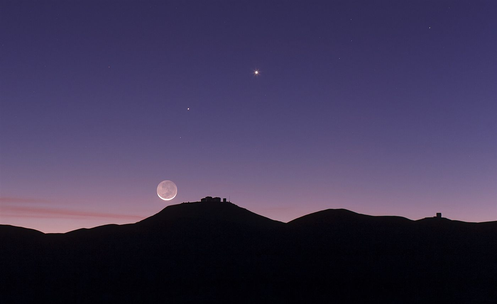
הירח מקיף את כדור הארץ ב־27 ימים ו־7 שעות. אבל בינתיים כדור הארץ זז סביב השמש, והירח צריך עוד יומיים כדי להשיג אותה.
רק כשהוא שוב בין כדור הארץ לשמש יש מולד. לכן החודש של הלוח ארוך מסיבוב אחד של הירח.
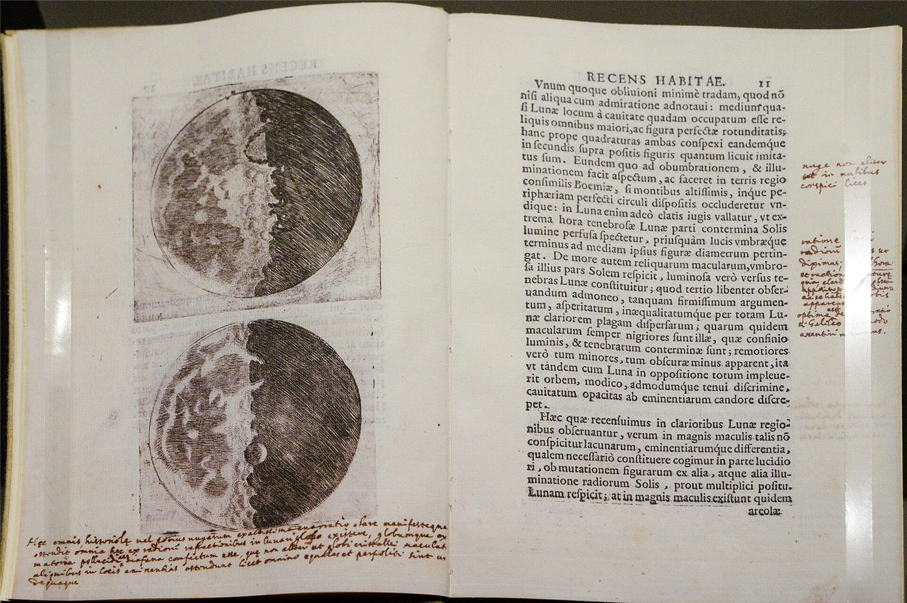
בזמן הסנהדרין קבעו את ראש החודש לפי עדים שראו את הירח החדש. כך זה עבד, שלב אחרי שלב. לוחצים על שלב כדי לפתוח אותו.
הירח בין כדור הארץ לשמש. אי אפשר לראות אותו.
בערך יום אחרי, קשת דקה במערב מיד אחרי השקיעה.
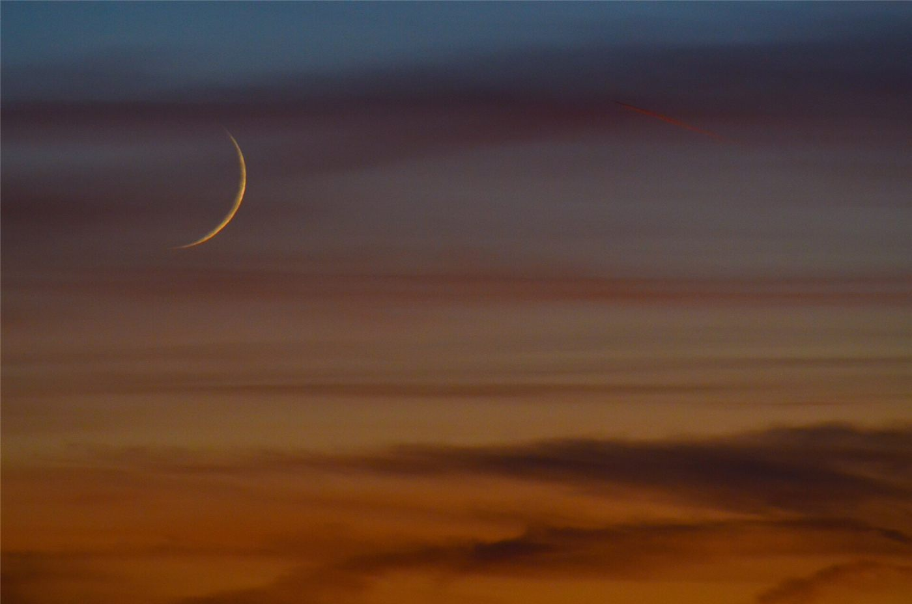
מי שראה את הירח החדש בא לבית הדין בירושלים והעיד.
בית הדין שאל איפה ראו את הירח, לאיזה צד נטה וכמה היה גבוה, ובדק לפי החשבון.
ראש בית הדין אומר ״מקודש״, וכל העם עונה אחריו ״מקודש, מקודש״.
משואות אש על ראשי ההרים, מהר המשחה והלאה, הודיעו לכל הארץ שהחודש התקדש.
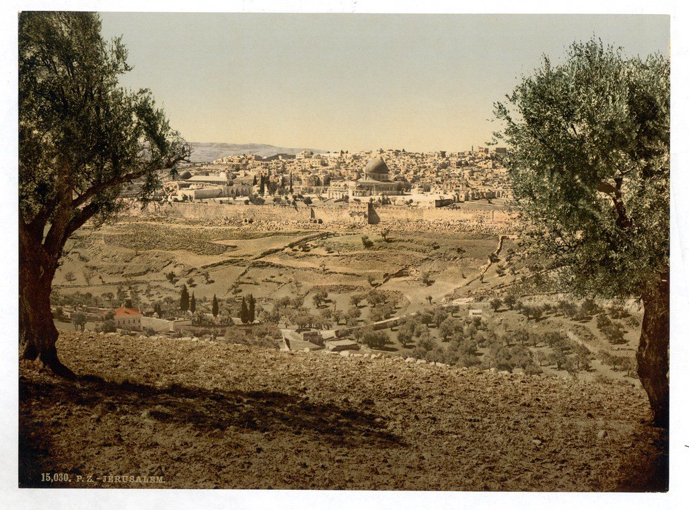
360° בשמיים, 30° לכל מזל
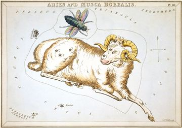
תחילת האביב. כאן השמש ביום השוויון של האביב: תקופת ניסן.
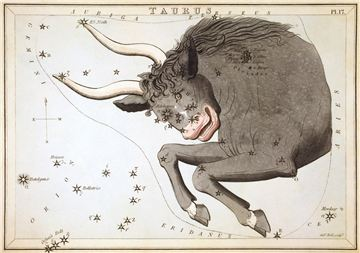
השמש עוברת בו בחודש אייר, בערך.
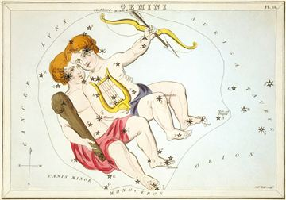
השמש עוברת בו בחודש סיוון, בערך.
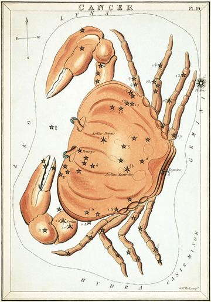
תחילת הקיץ, היום הארוך בשנה: תקופת תמוז.
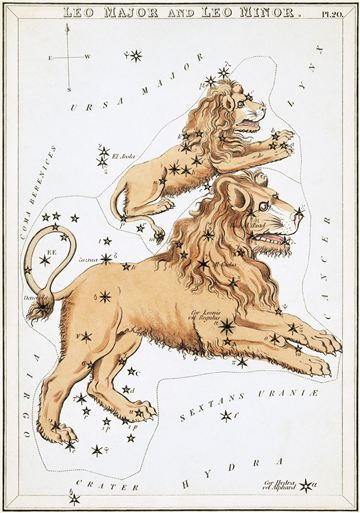
השמש עוברת בו בחודש אב, בערך.
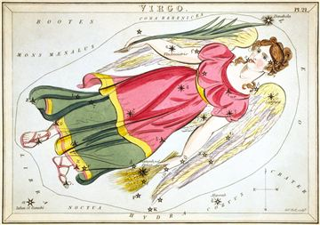
השמש עוברת בו בחודש אלול, בערך.
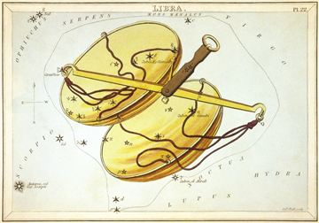
תחילת הסתיו. היום והלילה שווים: תקופת תשרי.
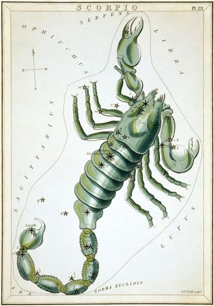
השמש עוברת בו בחודש חשוון, בערך.
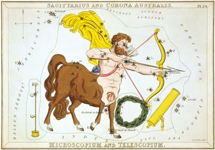
השמש עוברת בו בחודש כסלו, בערך.
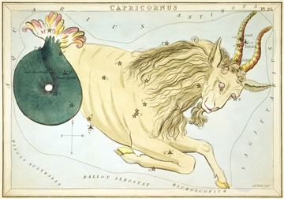
תחילת החורף, הלילה הארוך בשנה: תקופת טבת.
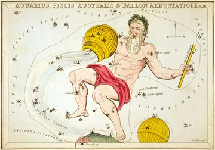
השמש עוברת בו בחודש שבט, בערך.
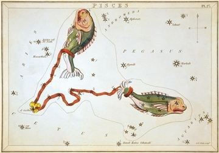
השמש עוברת בו בחודש אדר, בערך.
שנת חמה, מתקופה לתקופה, היא 365 ימים ו־6 שעות לפי שמואל. שנים־עשר חודשים של מולד הם רק 354 ימים, 8 שעות ו־876 חלקים. ההפרש הוא כמעט 11 ימים בכל שנה. בלי תיקון, פסח היה מקדים בכל שנה, ואחרי כמה שנים היה יוצא בחורף. אבל התורה אומרת ״שמור את חודש האביב״. לכן מוסיפים מדי פעם חודש שלם, אדר ב׳. 19 שנות חמה הן כמעט בדיוק 235 חודשים, וההפרש הוא רק שעה ו־485 חלקים. בכל מחזור של 19 שנה יש 7 שנים מעוברות: 3, 6, 8, 11, 14, 17 ו־19. הסימן: גו״ח אדז״ט. ללמוד את כל זה צעד אחר צעד.